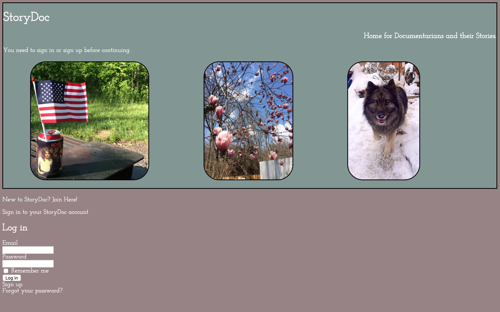
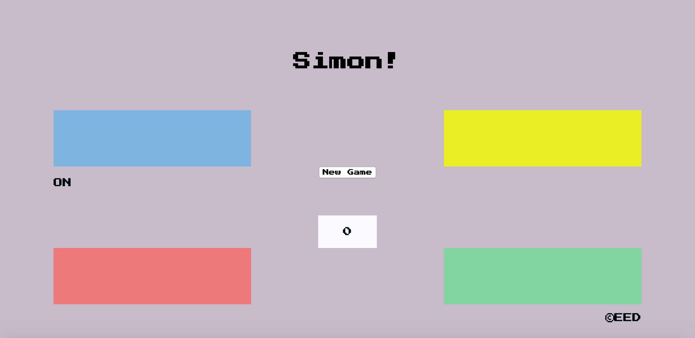
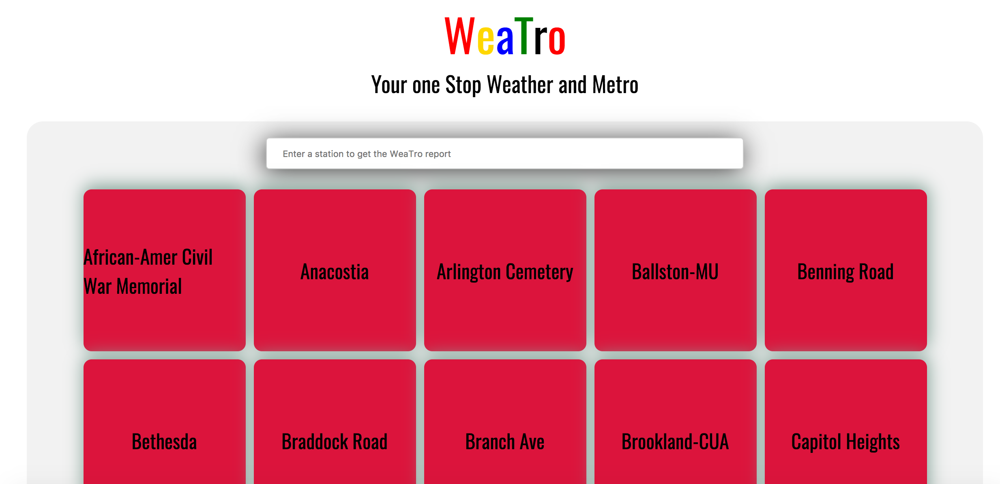

StoryDoc is an application that provides a platform for documentary photographers. a StoryDoc user can package photos and text into individual stories. this offers the user a clean and organized method for both storing and distributing their work. StoryDoc was built entirely in Rails over five days in April 2017. (github)

Simon is a Javascript version of the classic 80s game.(github)

Weatro allows the user to retrieve real-time train arrival data, and real-time weather data, for any rail station in the DC Metro network (WMATA). Weatro was built as a group project, and uses a Rails back-end with an Angular front-end.(github)